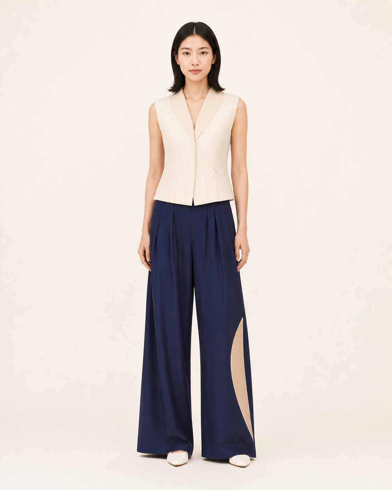
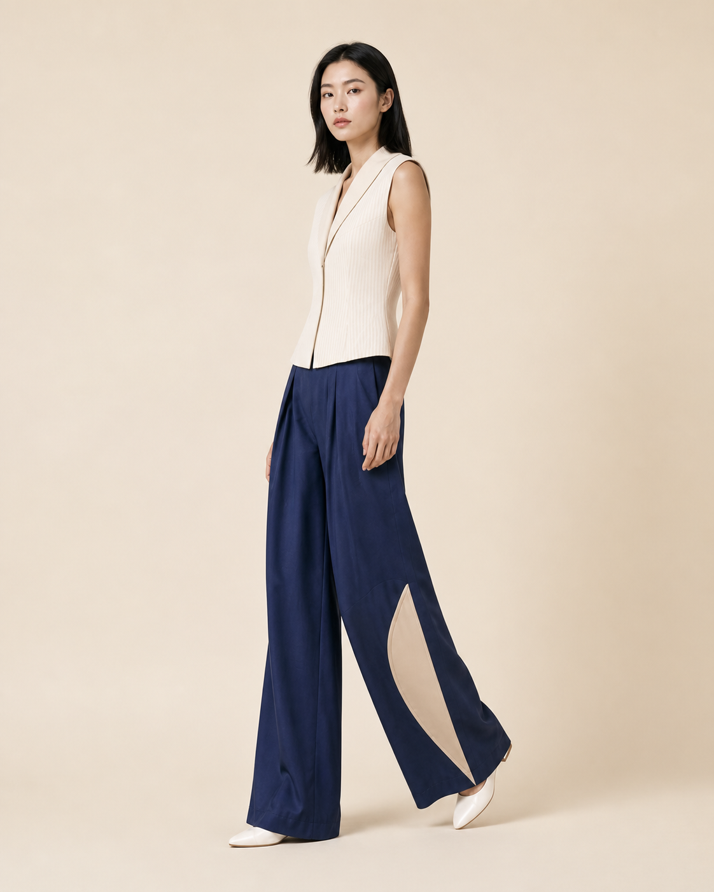

VIASEAM 2027 春夏系列
沿线而行
五套造型，三个空间，一条从身体出发的路径。

LOOK02
从海岸抵达身体。
系列造型在海风、建筑与行走之间展开。线条不只是装饰，也成为身体与空间相互连接的路径。

抵达海滨
第一空间
午后俱乐部
第二空间
沿海回廊
第三空间五套系列造型
不同动作，相同路径

系列页面先展示整体造型和空间关系。商品信息与购买内容仍然保留在现售商品页中。
浏览现售商品 ↗VIASEAM 2027 春夏系列
五套造型，三个空间，一条从身体出发的路径。

LOOK02
系列造型在海风、建筑与行走之间展开。线条不只是装饰，也成为身体与空间相互连接的路径。
五套系列造型

系列页面先展示整体造型和空间关系。商品信息与购买内容仍然保留在现售商品页中。
浏览现售商品 ↗